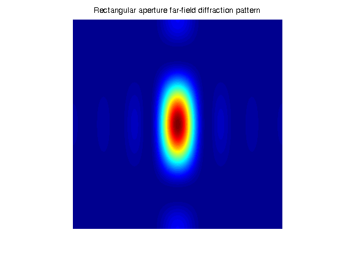

Using FFT2 on the GPU to Simulate Diffraction Patterns
This demo uses Parallel Computing Toolbox™ to perform a 2-dimensional Fast Fourier Transform (FFT) on a GPU. The 2-dimensional Fourier transform is used in optics to calculate far-field diffraction patterns. These diffraction patterns are observed when a monochromatic light source passes through a small aperture, such as in Young's double-slit experiment.
Contents
Define Coordinate System
Before we simulate the light that has passed through an aperture, we must define our coordinate system. To get the correct numerical behavior when we call fft2, we must carefully arrange x and y so that the zero value is in the correct place.
% N2 is half the size in each dimension.
N2 = 1024;
[x, y] = meshgrid( -1 : 1/N2 : (N2-1)/N2 );
gx = gpuArray( x );
gy = gpuArray( y );
Diffraction Pattern for a Rectangular Aperture
We simulate the effect of passing a parallel beam of monochromatic light through a small rectangular aperture. The 2-dimensional Fourier transform describes the light field at a large distance from the aperture. We start by forming aperture as a logical mask based on the coordinate system, then the light source is simply a double-precision version of the aperture. The far-field light signal is found using fft2.
aperture = ( abs(gx) < 4/N2 ) .* ( abs(gy) < 2/N2 ); lightsource = double( aperture ); farfieldsignal = fft2( lightsource );
Displaying the Light Intensity for a Rectangular Aperture
We calculate the far-field light intensity from the magnitude squared of the light field. We use real and imag because there is currently limited arithmetic support for GPUArray arrays. Finally, we use gather to bring the data back to the host for display.
realsig = real( farfieldsignal ); imagsig = imag( farfieldsignal ); farfieldintensity = realsig.*realsig + imagsig.*imagsig; imagesc( fftshift( gather( farfieldintensity ) ) ); axis( 'equal' ); axis( 'off' ); title( 'Rectangular aperture far-field diffraction pattern' );
Simulation of Young's Double-Slit Experiment
One of the most famous experiments in optics is Young's double-slit experiment which shows light interference when an aperture comprises two parallel slits. A series of bright points are visible where constructive interference takes place. In this case, we form the aperture representing two slits. We restrict the aperture in the y direction to ensure that the resulting pattern is not entirely concentrated along the horizontal axis.
slits = (abs( gx ) <= 10/N2) .* (abs( gx ) >= 8/N2); aperture = slits .* (abs(gy) < 20/N2); lightsource = double( aperture ); farfieldsignal = fft2( lightsource );
Displaying the Light Intensity for Young's Double-Slit
We calculate and display the intensity as before.
realsig = real( farfieldsignal ); imagsig = imag( farfieldsignal ); farfieldintensity = fftshift( gather( realsig.*realsig + imagsig.*imagsig ) ); imagesc( farfieldintensity ); axis( 'equal' ); axis( 'off' ); title( 'Double slit far-field diffraction pattern' );